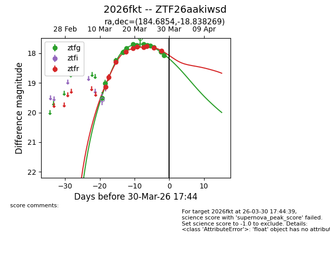
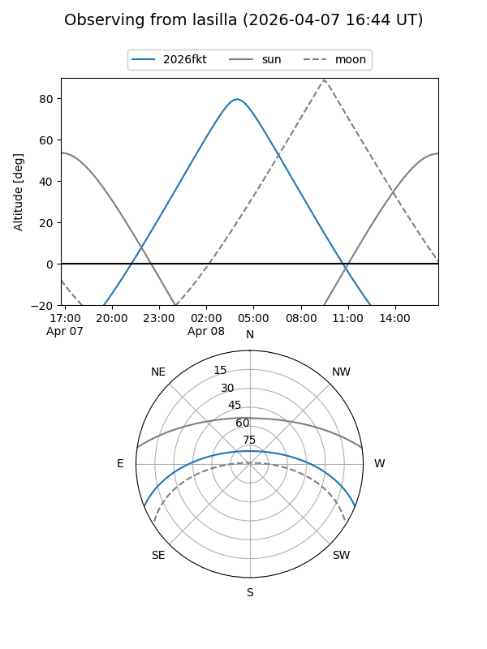
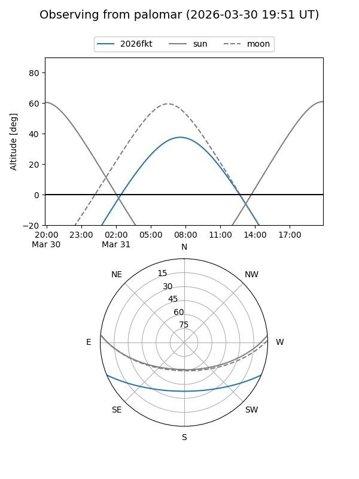
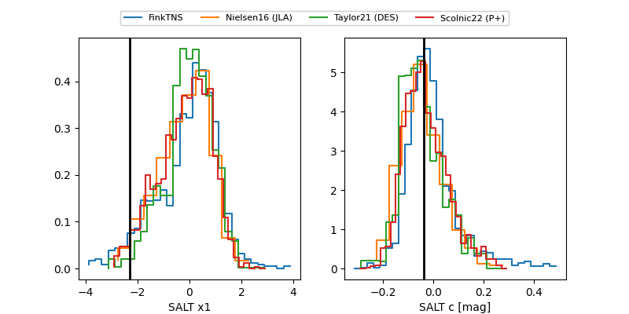

2026fkt
Target 2026fkt at 2026-03-30 17:47
Aliases and brokers:
FINK: link
Lasair: link
ALeRCE: link
TNS: link
YSE: link
alt names
ZTF26aakiwsd (ztf,fink_ztf)
2026fkt (tns,yse)
Coordinates:
equatorial (ra, dec) = 184.6854,-18.83827
equatorial (HMS+DMS) = 12:18:44.51,-18:50:17.77
galactic (l, b) = (292.2669,+43.35537)
Flags:
Photometry:
last ztfg=18.07, ztfr=17.92
13 ztfg, 10 ztfr detections
Lightcurve

Visibility


Additional plots
